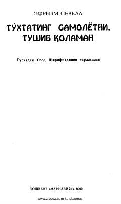

TSSovet davri jamiyatidagi nuqsonlarni fosh etuvchi o'tkir hajviy qissa.
Ushbu qissa sovet tuzumining so'nggi yillaridagi ijtimoiy muammolarni hajviy va kinoyali uslubda ochib beradi. Asar muallifi Efraim Sevela o'ziga xos yumor va o'tkir til bilan insoniy munosabatlar hamda jamiyatdagi nuqsonlarni tasvirlaydi.